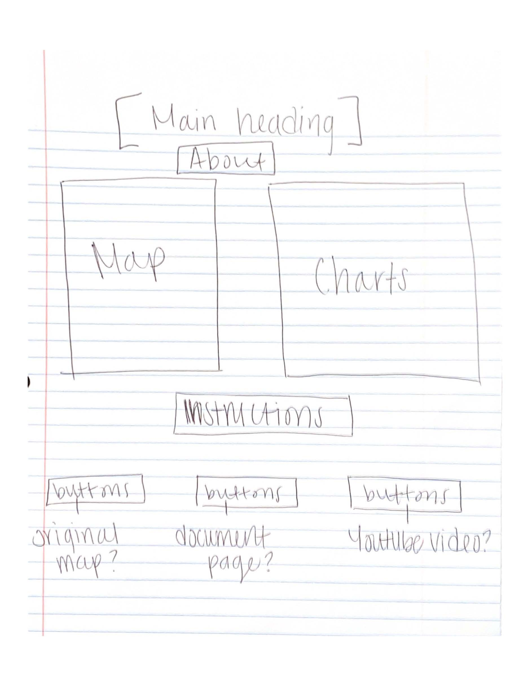
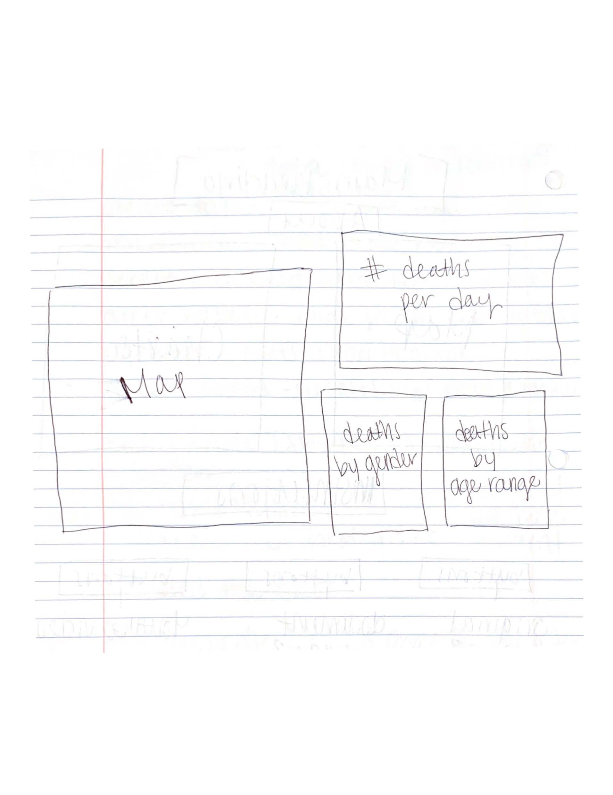
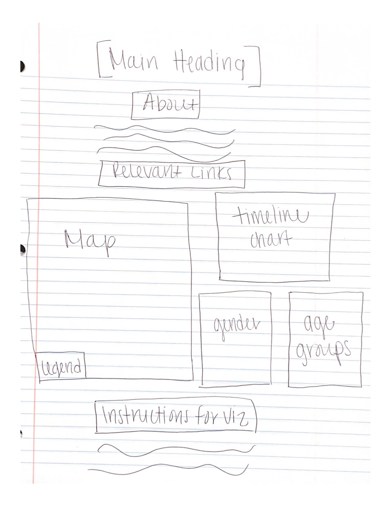

The modernized visualization of John Snow's 1854 Cholera Map was created by Demi Johnson for Dr. Khairi Redi's,
Fall 2020, H517: Visualization Design, Analysis, and Evaluation course conducted at IUPUI.
Before ever starting the project, I spent a good two weeks watching tutorials and learning d3. I am glad I took the extra time to understand how to make data visualizations with d3 because I felt more confident when beginning the project and it made the process of creating my first interactive visualization easier. To begin the project, my first step in my design process was to gain a solid understanding of the data that I was going to be creating the visualizations for, and it was nice to have John Snow’s original map as a reference. I was able to determine I would need 3 graphs, to represent the deaths by date, by gender and by age group. Additionally, I would need the map that would tie all three graphs together to create the overall visualization.
The initial design involved the map with the street and pump locations to the left of the corresponding charts. The timeline chart, another bar chart to show the number of deaths by gender and a bar chart to show the number of deaths by age group would be the corresponding charts to the right. After implementing this initial design, I began to see that I should modify the structure to make it easier for the user to see all charts and the map interacting with each other. I then thought to make the map large on the left and create the 3 charts on the right smaller. The charts would be structured to have the timeline chart on the top right and the deaths by age group and gender underneath next to each other. To make things easier for a user of my html page I wanted to also add a few other features for navigating and understanding my project. Originally, I wanting to have an about section above my visualization and instructions on how to use the map and charts and buttons to navigate to additional links under the visualization. But when implemented, I did not like how the arrangement looked. Therefore, in my last and final design, I moved the relevant links underneath the About feature but above the visualization.



I spent a good amount of time on choosing my colors for the variables on the map and on the chart. I used the Color Brewer to help me choose a color scheme that would be pleasing to both people who are color blind and those users that are not. With the map, and the small dots that would be representing deaths, it make it difficult to choose sensible colors because they needed to be colors that were dark enough to be visible and also a large enough contrast between the male and female deaths for those colorblind to identify as different variables. Additionally, I used the color blindness simulator, Color Oracle, to test if the colors I chose would be sufficient. These two tools provided above were color tools recommended by Dr. Redi.
Color Brewer Color OracleAs mentioned in my design process above, I arranged my charts the way I did to allow easy visibility and accessibility to all charts and maps. I wanted to make this a priority in my design because of the linked visualizations where the data is simultaneous.
Why bar charts?
With the creation of my three additional charts that collectively manipulated the map, I could make a few new discoveries regarding the data that John Snow’s original map made it difficult to conclude: